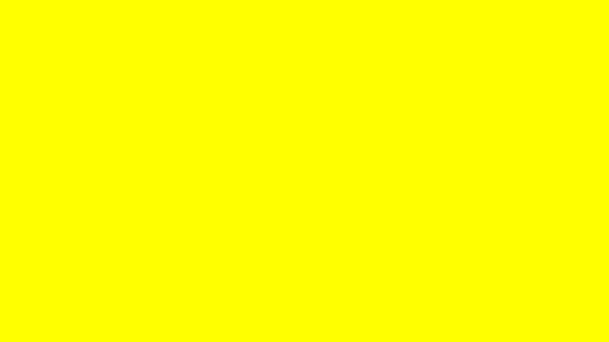

Yaahh tidak ada alasan sih, aku hanya merasa warna kuning adalah warna paling indah yang pernah ada.
Kalian setuju ngga?
Setuju TidakKalo tidak, kenapa? (Kalian bisa mengirim alasannya di chat pribadiku)
Yang jawab tidak, kalian sukanya warna apa?
Merah Biru Hijau Hitam Putih Yang LainnyaKalo kalian mikir lagu centil itu kayak lagu kuno Indonesia yang bahasanya tabu, kalian salah.
Lagunya tuh kayak gini gais
Coba kalian tonton, dijamin nagih deh :D
Alasannya cukup sederhana, lagu-lagu tersebut mampu menghiburku di saat apapun kapanpun dan dimanapun.
Oh iya, selain lagu centil aku juga lumayan suka genre lagu Jazz!
Ini salah satu lagu Jazz kesukaanku

Lagu genre Jazz tuh nenangin banget gais, aku aja kecanduan :p
Apa kalian juga suka lagu Jazz?
Suka! Ngga sihKalo ngga, kalian sukanya lagu genre apa?
Jazz Pop Rock Indie Yang LainnyaSebutin dong judul lagu kesukaan kalian
Menurutku sajak yang paling indah bukan sajak yang tidak bisa dimengerti, tapi sajak yang penuh perasaan.
Aku suka memahami perasaan seseorang lewat tulisanku.
Tokoh sajak yang paling aku suka adalah Almarhum Pak Sapardi Djoko Damono.

Namun karena beliau sudah bahagia disana, mohon titip doa Al-fatihah ya buat idola legendaku.
Nah kalo tokoh mudanya, aku suka Kak Tsana
Kalian tau ngga Kak Tsana itu siapa?
Tau banget Aduh ngga lagiKak Tsana tuh yang punya podcast di Spotify gais! (Pasti kalian pernah denger)

Dengerin deh, kalian pasti ngerasa tenang banget abis denger satu episode nya terus kecanduan buat dengerin lagi besoknya HEHEHE